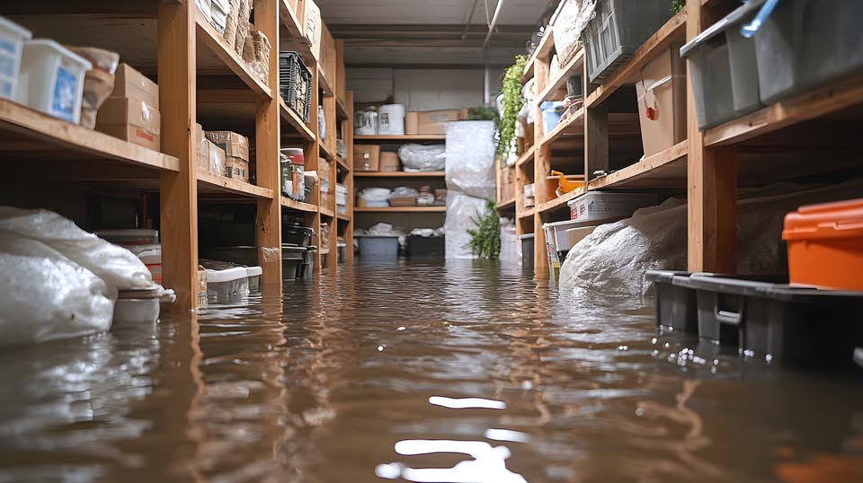

Does Homeowners Insurance Cover Water Damage in Florida
Florida policies cover sudden accidental water damage and exclude rising water and long term seepage. Here is how the line is drawn.

Flood insurance and homeowners insurance cover different water, and in Pinellas County that distinction decides a great many claims. Water that rises from outside the building is flood. Water that escapes from inside it is homeowners.
The damage can look identical. A soaked living room from storm surge and a soaked living room from a burst pipe are handled by two completely different policies.
Water coming in right now? Call and we will confirm an arrival window for your address.
Call (833) 289-9993| Source of water | Policy that responds |
|---|---|
| Burst supply line or failed hose | Homeowners |
| Water heater rupture | Homeowners |
| Appliance overflow | Homeowners |
| Wind driven rain through a storm damaged roof | Homeowners, under wind coverage |
| Storm surge | Flood |
| Street or drainage overflow entering the house | Flood |
| Tidal or king tide flooding | Flood |
| Groundwater rising through the slab | Flood |
Flood policies define flooding as a general and temporary condition of partial or complete inundation of normally dry land, usually affecting two or more properties or a large area.
That definition is why a burst pipe that puts an inch of water through your house is not a flood, even though it looks like one. Water has to come from outside and affect the area, not just your building.
Flood coverage splits into building and contents, and they are bought separately. Owners who carry building coverage only are sometimes surprised to find furniture and belongings are not included.
Coverage below the base flood elevation is also restricted. In an elevated beach property, the ground level enclosure usually has very limited coverage for both building elements and contents.
Not sure whether this is a job for a crew? Describe what you are seeing and we will tell you plainly.
Call (833) 289-9993New flood policies commonly carry a waiting period before coverage takes effect. Buying when a storm is already named is usually too late.
The practical consequence is simple. Flood coverage is bought before the season, not during it.
When both perils could plausibly apply, the claim turns on evidence of where the water came from. Photographs of the water line inside and outside the building, with a tape measure in frame, do more than any description.
Documenting the source and the height early is what keeps a claim with the right carrier.
For the full scope of extraction, drying and repair work across Pinellas County, see water damage restoration in Largo, FL.
Get it handled
Call if any of these apply. A two minute conversation is usually enough to tell you whether the work needs a crew.
Availability is confirmed when you call, with an arrival window for your address.
Call (833) 289-9993Related guides
Florida policies cover sudden accidental water damage and exclude rising water and long term seepage. Here is how the line is drawn.
Burst pipe first steps for a Largo, FL home. Where to shut the water off, what to photograph, and what to move before anyone else arrives.
Water damage in a Largo slab home moves sideways, not down. Here is what happens hour by hour, and which first-day calls decide what gets saved.
Mold growth timeline for a wet Largo, FL home. What happens each day, why Florida humidity speeds it up, and when drying alone stops working.
Services
Documented drying with daily readings and photographs for your claim.
Phased commercial dry out with records formatted for adjusters.
Questions
No. Standard homeowners policies exclude water that rises from outside the building. Storm surge, drainage overflow and tidal flooding all need a flood policy.
Water that inundates normally dry land from outside, usually affecting a wider area rather than one building. A burst pipe is not a flood regardless of how much water there is.
It depends on your elevation and flood zone rather than the city. Low lying and coastal parcels carry the most exposure, and lenders often require coverage in mapped zones.
No, they are separate limits bought separately. Owners with building coverage only often find their belongings are not included.
Coverage below the base flood elevation is restricted for both building elements and contents, which matters for elevated beach properties.
Commonly yes. Buying coverage once a storm is named is usually too late, which is why flood policies are arranged before the season.
The adjuster, based on evidence of where the water came from. Photographs of the water line inside and outside with a measurement are the strongest record.
No. Rain entering through a wind damaged roof or window is generally handled under the wind portion of a homeowners policy.
A document showing how your finished floor compares to base flood elevation. It affects your flood premium and what can be required after a major repair.
Sometimes, when separate causes damaged separate parts of the property. Each carrier evaluates its own peril, which makes documentation of the source critical.
Call and describe what you are seeing. We confirm an arrival window for your address.